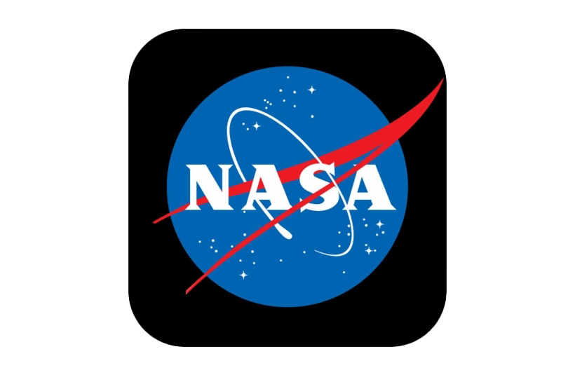

 |
La NASA ha realizado múltiples misiones importantes que han cambiado nuestra comprensión del universo. A continuación, se presentan algunas de las más destacadas:
| Misión | Año | Descripción |
|---|---|---|
| Apolo 11 | 1969 | Primera misión en la que el ser humano llegó a la Luna. |
| Voyager 1 | 1977 | Sonda que salió del sistema solar y sigue enviando información. |
| Transbordador Espacial | 1981 | Programa de misiones reutilizables al espacio. |
| Telescopio Hubble | 1990 | Observación del universo con gran precisión. |
| Rover Curiosity | 2012 | Exploración de Marte en busca de vida. |
A continuación puedes ver un video que explica de manera visual la historia y los logros más importantes de la NASA.